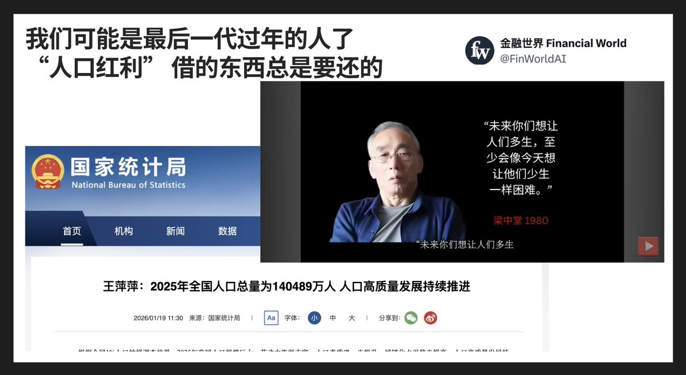

御坂 O.o 雪春📕 (掉fo版)（雪似梅花）
@0502railgun1949
本质上其实就是马尔萨斯人口论
没有考虑过生产力的发展
没有考虑过人口结构
没有考虑过经济社会影响
静止的机械的看问题

金融世界 Financial World
@FinWorldAI
国家统计局刚公布2025年出生人口792万人，自然增长率-2.41%，连续4年负增长。人口学者梁中堂在上世纪80年代就曾反复预警过，并反对当局的一胎政策。当年这套路线之所以能赢，本身就很有时代意味。主导“一胎化模型”的宋健出身航天与控制工程体系，长期做的是火箭轨道、系统稳定性这种可计算对象。在他的 https://t.co/DWhcy9AbwY